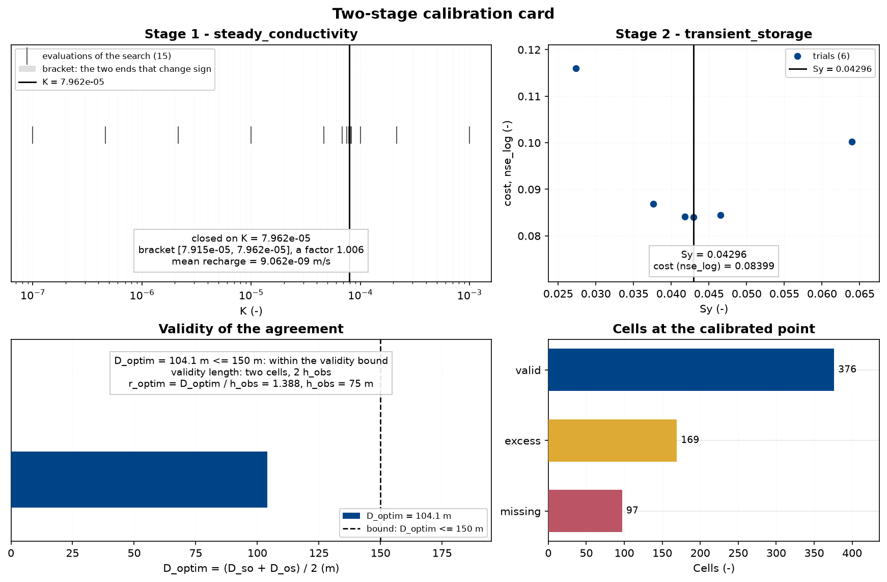
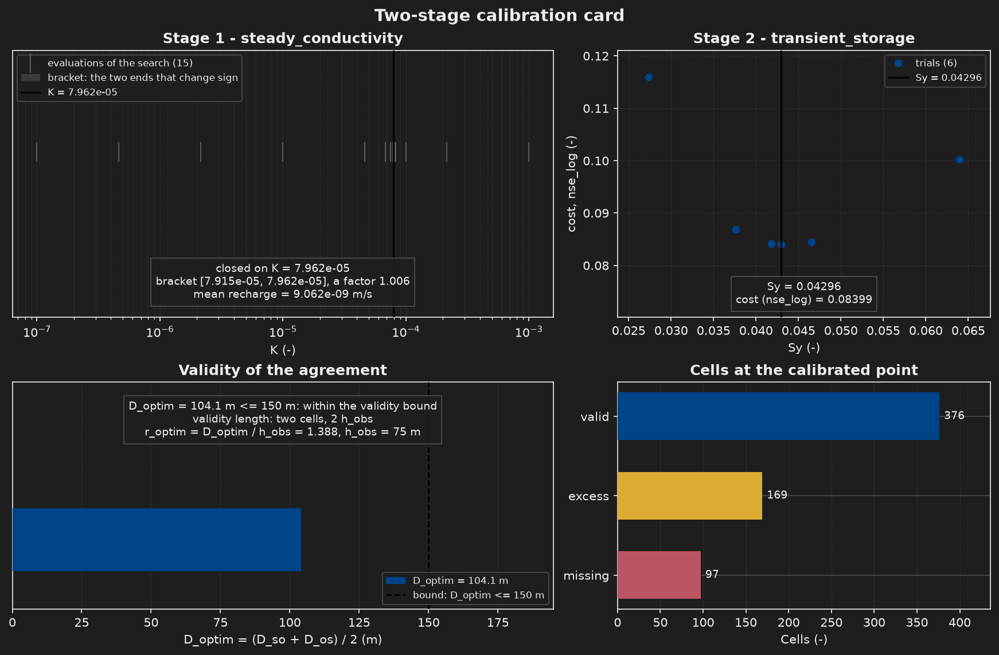

Calibrate on a network and a discharge#
- Task
Move K until the simulated stream network matches a mapped one, then move Sy until the simulated discharge matches the gauge.
- Time
A few minutes for the check, the calibration is a series of monthly runs.
- Needs
The example files (The staircase). The network map is a file of the example, so nothing is downloaded.
- Gives
The best K and Sy, a full run of each stage with its figures, and a trace of the search.
Example 04 calibrates in two stages. K alone is moved until the cells where the water table reaches the surface fall on the mapped network. Then Sy alone is moved, with K frozen, until the simulated discharge follows the gauge. The mapped network and the gauge are targets. They score the model and never enter it. How sure is the model? says what the result can and cannot tell.
What can be calibrated#
hmp config targets lists the parameters a calibration can move, with their current value, unit and the path they write to. It loads the file and solves nothing.
name current unit space draw default bounds physical range path
thickness 30 m log log_uniform - 0 .. 10000 domain.depth_model.thickness
drainage 0 m2/s log log_uniform - - flow.bc.drainage.value
K 5e-05 m/s log log_uniform - 1e-14 .. 100 flow.param.K.field.value
Ss 1e-05 m-1 log log_uniform - 1e-12 .. 0.001 flow.param.Ss.field.value
Sy 0.05 - log log_uniform - 0.0001 .. 0.5 flow.param.Sy.field.value
"recharge.factor" 1 - log log_uniform 0.5 .. 2 - flow.sinks_sources.recharge.factor
vka 1 - log log_uniform - 0.001 .. 100 solver.modflow6.process_specific.vka
A parameter you move gets a [calibration.parameters.<name>] table with a pair of bounds. The search is in log space.
The file#
run_calibration_by_hand.toml writes the two stages as two phases. run_calibration.toml runs the same trials under the name of the published protocol.
run_calibration_by_hand.toml inherits project.toml · + new · ~ changed · keys link to their card1# Nancon, the method of run_calibration.toml written out as two phases. It runs 2# the same trials; only the citation a protocol run records is lost. 3# `hmp calibrate run_calibration.toml --expand` prints what this file follows. 4# 5# hmp calibrate run_calibration_by_hand.toml --list-phases same lines as run_calibration.toml 6# hmp run run_calibration_by_hand.toml both phases, in order 7 8+base_config = "project.toml" 9 10+[workflow] 11+mode = "calibration" 12 13[simulation] 14~name = "nancon_intermittence_mf6_by_hand" 15~description = "Nancon, K from the mapped network then Sy from the gauge." 16 17+[calibration] 18 19+[calibration.parameters.K] 20+bounds = [1e-7, 1e-3] 21 22+[calibration.parameters.Sy] 23+bounds = [5e-3, 0.35] 24 25# An output is a simulated quantity with its observation. 26+[calibration.outputs.seepage_network] 27+support = "network" 28 29# The record of the gauge of [site], on the simulated months: a point output 30# that names no station observes the gauge. 31 32+[calibration.outputs.seepage_network.map] 33+complete = "nancon_stream_network.gpkg" 34+[calibration.outputs.hydrograph] 35+support = "point" 36+variable = "discharge" 37 38# A block scores outputs with one metric. Eq. 1: the network gap in meters, 39# zero when the simulated network reaches as far as the mapped one. 40+[[calibration.objective_blocks]] 41+name = "network_extension" 42+metric = "distance_gap" 43+uses_outputs = ["seepage_network"] 44 45# NSE on log discharge, which weights the recessions where storage shows. 46+[[calibration.objective_blocks]] 47+name = "hydrograph" 48+metric = "nse_log" 49+uses_outputs = ["hydrograph"] 50 51# Phase one: K alone, one steady period over 2000-2002, bisection on log K. 52+[[calibration.phases]] 53+name = "steady_conductivity" 54+description = "Match the simulated seepage network to the mapped one by moving K, steady state over the record." 55+parameters = ["K"] 56+regime = "steady" 57+objective_blocks = ["network_extension"] 58+method = "bisection" 59+max_trials = "auto" # the bisection budgets its own worst case 60 61# Phase two: Sy alone, monthly transient, K from phase one. It does not start 62# if phase one did not converge. 63+[[calibration.phases]] 64+name = "transient_storage" 65+description = "Read Sy from the observed hydrograph, K frozen, transient, scored over [metrics] window, 2001-01-01 to 2002-12-31." 66+parameters = ["Sy"] 67+regime = "transient" 68+objective_blocks = ["hydrograph"] 69+method = "scipy_nelder_mead" 70+max_trials = 30 71+precision = 0.05 72+depends_on = "steady_conductivity" 73# No window: the phase scores [metrics] window of project.toml, 74# 2001-2002, as the protocol writes it. 2000 is spin-up. 75 76# The figures and the exports of project.toml, for the best run of each 77# phase, plus the gauged discharge against the simulated one, month by month. 78[display] 79+figure__append = [ 80 {variable = "discharge", type = "xy", observed = true, reference = ["one_to_one"]}, 81]
An output is a simulated quantity paired with its observation. The tables of the network output carry the choices that matter.
mapis the mapped network.completeis every reach andpermanentthe reaches that never dry. Both together make a two-bound search, shared bycalibrate_on.modelsays how the model draws its own network, with the weight of each cell and the flow a reach must carry to count.verdictsays when the result holds. A distance above the validity length logs a warning, or stops the run withon_invalid = "error". Downslope distance between two networks gives the criterion.
A block scores outputs with one metric, and a phase moves some parameters against some blocks. Each phase can carry a window. The first year here is spin-up, so it is simulated and not scored. A validation_window is scored beside the cost and never enters it, to check the result on dates the search did not see.
Check it, then run it#
hmp check run_calibration_by_hand.toml
hmp calibrate run_calibration_by_hand.toml --list-phases
hmp run run_calibration_by_hand.toml
The first command lists every problem of the file at once. The second prints each phase before any solve. The third runs both phases and replays the best trial of each as a full run.
Read the result#
The root_search preset, asked with when = "session", draws the calibration card of both stages. Stage one shows the evaluations of K and the bracket the bisection closed on. Stage two shows the cost of each Sy. The lower panels give the validity of the network agreement, \(D_{optim}\) against its bound, and the cells that are valid, in excess or missing at the calibrated point.




The figure and the output of hmp config targets above are written by tools/docs/figures/render_ex04_figures.py from the runs of run_calibration.toml, which are the same trials. Scoring a simulated stream network explains the network criterion. The options of each method are on Calibration methods and metrics, and the keys on [calibration].